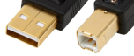
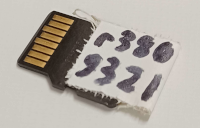
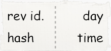
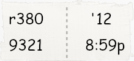
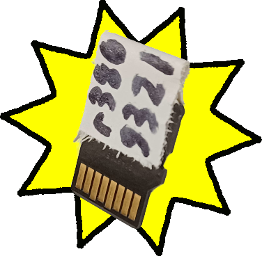
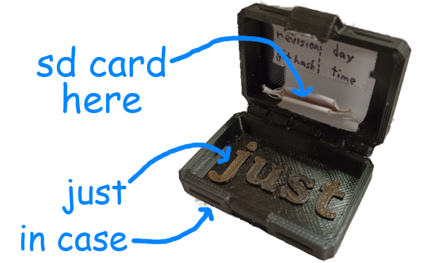

Making an SD Card Backup at a Competition
When the robot's code is modified during a competition, we back up the new code on an SD card. This is so that, if the main SD card gets corrupted, we can quickly recover it.
Re-Imaging
We usually only do this once at the start of the competition, once at the end of the qualification matches, and always if the card corrupts.
- You'll need a driver station laptop with an SD card port or adapter.
- There are several tools to flash SD cards with, but the most reliable one is the Raspberry Pi Imager (you could also use balenaEtcher if needed).
- You'll need to find the roboRIO2 image. It's usually located at
C:\Program Files (x86)\National Instruments\LabVIEW 2023\project\roboRIO Tool\FRC Images(and it's been copied to Downloads on at least one laptop), but failing that you can open the roboRIO Imaging Tool and click the "SD" folder icon. The zip should have both "roboRIO2" and the current year in the name, e.g.FRC_roboRIO2_2025_v2.0.img.zip(it may be in a subfolder). - To flash with Raspberry Pi Imager:
- Press
CHOOSE OS, select Use custom at the bottom of the list, and select the .zip you found above. - Press
CHOOSE STORAGEand select the SD card (usually appears as "SDHC Card"). - Press
NEXT, answerNOto the customization question, and, after confirming the name of the SD card, confirmYESto the erasure warning.

- Wait for the flashing to finish.
- Press
Number Setting and Code Deploying
The team number needs to be set at least once after flashing, and the code should be redeployed whenever new fixes are made. Both of these require a connection to a roboRIO2.
Connecting to the roboRIO2
- Using a standalone RIO setup is preferred, but lacking that, the actual robot works too. The Electrical team can help you get the standalone one working.
- Make sure you never insert or remove the SD card while the RIO is powered; this will most likely corrupt it. Powering off the RIO while deploying code is also not a good idea.
- Insert your flashed SD card and turn the RIO on.
- Connect to the RIO with a USB printer cable (A to B):

- Once the RIO is booted up, it should appear in the Driver Station software. (
No Robot Codeis fine,No Robot Communicationis not)
Setting the Team Number
- You can check if the team number is already set in two ways:
- In Driver Station, if the RIO is connected, it will show the team number of the RIO above the battery voltage. If the team number is wrong, or it shows "Team # USB", you need to set the team number.
- The roboRIO Team Number Setter will show RIOs it finds as "NI-roboRIO2-..." if the number is unset and "roboRIO-XXXX-FRC.local..." if it is. Again, you need to set the team number if it's unset or wrong.
- Open the roboRIO Team Number Setter and set the team number at the top of the window to
2122. - Find the roboRIO you want to set in the list and click
Set team to 2122. - If you want to confirm that the number is right, reboot the roboRIO and then check again.
Deploying the Code
- Connect to the Internet. This can be via a mobile hotspot, a Wi-Fi network that allows GitHub, or a VPN over a network that doesn't.
- Checkout the correct branch (
git checkout branch_name). Most of the time, the branch used at a competition will start withevent_. - If you checked out a branch, use
git pullto get the latest commits from the branch. - Use Ctrl+Shift+P to open the command palette, type
deploy, and select "WPILib: Deploy Robot Code" - Wait for the deploy to finish.
Test the code
- Open the Driver Station software (looks like a play button in a gray box).
- Wait for it to connect to the robot and load (it should say "Teleoperated Disabled" or similar, not "No Robot Code" or "No Robot Communication").
- To make sure that the code works...
- Select TeleOperated Mode
- Enable, then disable
- Select Autonomous mode
- Enable, then disable At no point during any of this should the code crash. If it does, view the error rather than putting faulty code on the SD card.
- At this point, the SD card is ready. Disconnect the RIO2 from power and take out the SD card.
Writing a Tag
Once an SD card is ready, we put a small tag on it so we know exactly what version of the code is on it.

(Please write more legibly than this - I wrote this with a rather imprecise sharpie)
Getting the info from gitTag
On the driver stations, there may be a Python script called gitTag.py. It's usually in the "code" folder, above the robot project folders.
1. Open a terminal in the project folder and run python ../gitTag.py gui. If it can't find that file or otherwise can't open, go to the section below.
2. If it does open, it will have all the information from the last code built.
Getting the info from BuildConstants.java
because that's really where gitTag gets it from
1. Open src/main/java/frc/robot/BuildConstants.java.
2. Read your info:
- GIT_REVISION is your revision id
- First four characters of GIT_SHA is your hash
- GIT_DATE has your day and time, though the time is in 24-hour format
Write it on a tag
Here's what the areas on a full tag mean, plus an example:


- The revision ID is a number that says where in the history a commit is; e.g.r380 is the 380th commit on this branch
- The hash is some hexadecimal that uniquely identifies a commit across all branches
- The day and time are just that - the tag above describes 8:59 pm on the 12th
And now, to write:
- Get a piece of tape. It should be big enough to hold all the info, but probably shouldn't be much taller than the SD card itself.
- Writing using an ultra-fine marker is best.
- Write the hash (what identifies the commit), revision ID (what can be used to put 2 SD cards in the correct order), as well as time.
- Once written, fold the tape over the back of the SD card as pictured above (avoid the contacts).
And now you finally have an SD card ready for a rescue!

Now, you can place the SD card in the Just In Case for safe keeping, and then give it to a mentor or member of the drive team.
